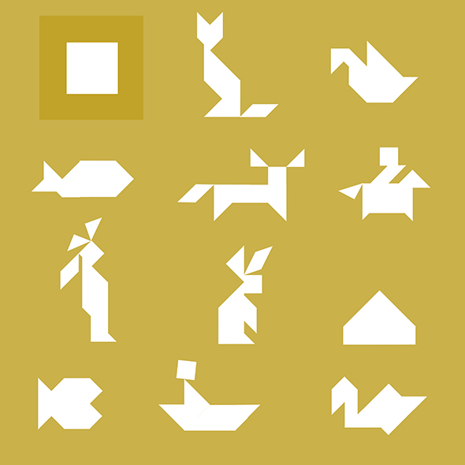
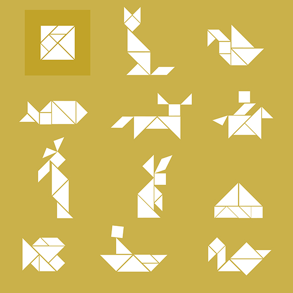

Ich liebe Tangrams. Und bevor ich euch unsere Tangrams zeige, habe ich meine lieblings Formen zusammengestellt. Kleinere Kinder können einfach die Lösung nachlegen.
Me encanta tangram. Y antes de que os enseñe a nuestros Tangrams, he juntado mis formas favoritas. Los niños más pequeños pueden simplemente poner su tangram mirando la solución.
I love tangram. And before I show you our Tangrams, I have put my favorite forms together. Younger children can simply look at the solution.
